Lectures in this section
Every lecture below links to the notes that cover it. Stages, PUT/GET, and basic COPY INTO are in Section 4.
- Bulk and Continuous Data Loading Concept 2:06
- Demo : Bulk Load Data Transformation II 6:46 Advance Data Loading/Bulk Load Transform.txt
- Loading Quiz
- Demo : File Format 4:49 Advance Data Loading/File Format.txt
- File Format Quiz
- Snowpipe Concept 4:24
- Demo : Snowpipe 8:02 Advance Data Loading/Snowpipe.txt
- Quiz
- Streams Concept 7:08
- Demo : Streams 10:57 Advance Data Loading/Stream.txt
- Streams Quiz
- Task Concept 4:48
- Demo : Tasks 11:10 Advance Data Loading/TASKS.txt
- Demo : Tasks || 1:46 Advance Data Loading/TASKS.txt
- Tasks Quiz
- Demo : COPY INTO I 7:21 Advance Data Loading/COPY INTO OPTIONS.txt
- Demo : COPY INTO II 6:38 Advance Data Loading/COPY INTO OPTIONS.txt
- Demo : Validation Mode and Validate 8:04 Advance Data Loading/VALIDATION.txt
- COPY INTO and Validation Quiz
- UDF and Store Procedure Concept 6:00
- Demo : UDF and Store Procedure 9:34 Advance Data Loading/UDF SP.txt
- UDF and SP Quiz
- Cloning Concept 8:21
- Demo : Cloning I 4:06 Advance Data Loading/CLONE.txt
- Demo : Cloning II 6:24 Advance Data Loading/CLONE.txt
- Cloning Quiz
Bulk and Continuous Data Loading Concept
Section 4 covered bulk COPY INTO on demand. This section adds continuous ingestion (Snowpipe), change tracking (streams), and scheduling (tasks) to automate the pipeline. Both paths load the same supported file types: CSV, TSV, JSON, Parquet, Avro, ORC, and XML.
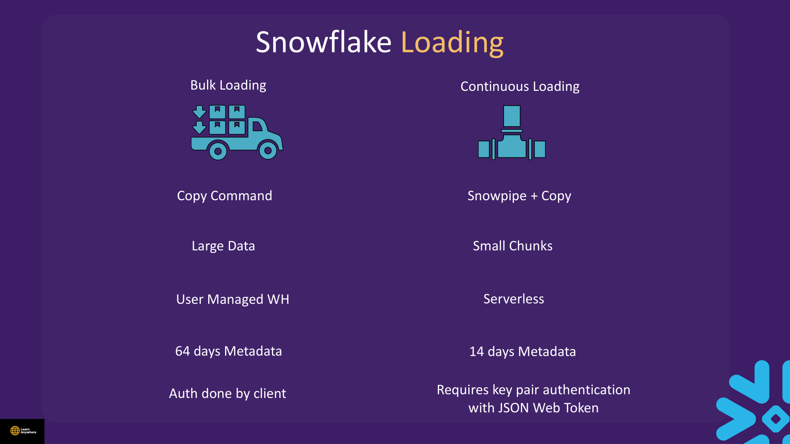
| Aspect | Bulk loading | Continuous loading (Snowpipe) |
|---|---|---|
| Mechanism | COPY INTO command | Snowpipe wrapping COPY INTO |
| Typical data volume | Large batches | Small chunks / frequent files |
| Compute | User-managed virtual warehouse | Serverless (managed by Snowflake) |
| Load metadata retention | 64 days on the target table | 14 days |
| Authentication | Done by the client (password, SSO, key-pair, etc.) | Requires key-pair authentication with a JSON Web Token |
| Trigger | Manual or task-scheduled | File arrival (cloud events) or ALTER PIPE … REFRESH |
ON_ERROR default | ABORT_STATEMENT | SKIP_FILE |
Bulk loading capabilities
Bulk COPY INTO is not limited to one-to-one column mapping. During load you can reorder columns, omit columns, apply casts, and truncate text strings that exceed the target column length (via TRUNCATECOLUMNS or shorter VARCHAR definitions). Snowflake also performs automatic duplicate-file detection: after a successful load it records which files were ingested in load metadata stored on the target table for 64 days. That history appears in the COPY INTO result set, which is why a repeat COPY against the same files returns zero rows unless you set FORCE = TRUE.
Classic CDC orchestration
DML changes
change log
MERGE on schedule
METADATA$ACTION and METADATA$ISUPDATE. A stream goes stale when source data ages past Time Travel retention — see Section 3. Tasks start in suspended state; you must RESUME them. Declarative pipelines with dynamic tables are covered in Section 15.
Demo : Bulk Load Data Transformation II
Course file: Advance Data Loading/Bulk Load Transform.txt
Instead of loading every column as-is, use a SELECT subquery in COPY INTO to reorder columns, concatenate fields, cast types, or add computed values — all during the load. Prerequisites: a named stage with MOCK.csv uploaded — see Section 4.
USE ROLE SYSADMIN;
USE WAREHOUSE COMPUTE_WH;
USE DATABASE la_db;
USE SCHEMA la_schema;
LIST @internal_named_stage;
-- Preview staged columns
SELECT t.$1, t.$2, t.$4
FROM @internal_named_stage/MOCK.csv t;
SELECT t.$1, CONCAT(t.$2, ' ', t.$3), t.$4, t.$7
FROM @internal_named_stage/MOCK.csv t;
CREATE OR REPLACE TABLE new_table2 (
customer VARCHAR,
full_name VARCHAR,
region VARCHAR,
email VARCHAR,
gender VARCHAR,
"ORDER" INTEGER
);
-- Reorder columns and build full_name from first + last
COPY INTO new_table2 (customer, full_name, region, gender, email)
FROM (
SELECT t.$1, CONCAT(t.$2, ' ', t.$3), t.$4, t.$6, t.$5
FROM @internal_named_stage/MOCK.csv t
)
FILE_FORMAT = (TYPE = CSV SKIP_HEADER = 1)
FORCE = TRUE;-- Cast order column; add BINARY column
CREATE OR REPLACE TABLE new_table2 (
customer VARCHAR,
full_name VARCHAR,
region VARCHAR,
email VARCHAR,
gender VARCHAR,
"ORDER" DECIMAL(15, 3),
extra_col BINARY
);
COPY INTO new_table2 (customer, full_name, region, email, gender, "ORDER", extra_col)
FROM (
SELECT
t.$1,
CONCAT(t.$2, ' ', t.$3),
t.$4, t.$5, t.$6,
CAST(t.$7 AS INTEGER),
TO_BINARY(t.$4, 'utf-8')
FROM @internal_named_stage/MOCK.csv t
)
FILE_FORMAT = (TYPE = CSV SKIP_HEADER = 1)
FORCE = TRUE;-- AUTOINCREMENT column (populated by Snowflake, not from file)
CREATE OR REPLACE TABLE new_table2 (
index_col NUMBER AUTOINCREMENT START 2 INCREMENT 10,
customer VARCHAR,
full_name VARCHAR,
region VARCHAR,
email VARCHAR,
gender VARCHAR,
"ORDER" DECIMAL(15, 3),
extra_col BINARY
);
COPY INTO new_table2 (customer, full_name, region, email, gender, "ORDER", extra_col)
FROM (
SELECT t.$1, CONCAT(t.$2, ' ', t.$3), t.$4, t.$5, t.$6,
CAST(t.$7 AS INTEGER), TO_BINARY(t.$4, 'utf-8')
FROM @internal_named_stage/MOCK.csv t
)
FILE_FORMAT = (TYPE = CSV SKIP_HEADER = 1)
FORCE = TRUE;
-- TRUNCATECOLUMNS when target VARCHAR is shorter than source
CREATE OR REPLACE TABLE new_table2 (
index_col NUMBER AUTOINCREMENT START 1 INCREMENT 1,
customer VARCHAR,
full_name VARCHAR(8),
region VARCHAR,
email VARCHAR,
gender VARCHAR,
"ORDER" DECIMAL(15, 3),
extra_col BINARY
);
COPY INTO new_table2 (customer, full_name, region, email, gender, "ORDER", extra_col)
FROM (
SELECT t.$1, CONCAT(t.$2, ' ', t.$3), t.$4, t.$5, t.$6,
CAST(t.$7 AS INTEGER), TO_BINARY(t.$4, 'utf-8')
FROM @internal_named_stage/MOCK.csv t
)
FILE_FORMAT = (TYPE = CSV SKIP_HEADER = 1)
TRUNCATECOLUMNS = TRUE
FORCE = TRUE;Demo : File Format
Course file: Advance Data Loading/File Format.txt
A file format object tells Snowflake how to parse files: delimiter, headers, compression, null handling, and type. Snowflake supports CSV, TSV, JSON, Parquet, Avro, ORC, and XML for loading. You can attach a format to a stage, reference it in COPY INTO, or override options inline.
CSV / TSV
Structured delimited text. Use SKIP_HEADER, FIELD_OPTIONALLY_ENCLOSED_BY, NULL_IF.
JSON / XML
Semi-structured. For JSON arrays use STRIP_OUTER_ARRAY = TRUE when the file is a top-level array.
Parquet / Avro / ORC
Columnar or binary formats. Parquet supports INFER_SCHEMA from file headers automatically.
CREATE OR REPLACE FILE FORMAT my_csv_ff
TYPE = CSV
FIELD_DELIMITER = ','
SKIP_HEADER = 1
NULL_IF = ('NULL', 'null')
EMPTY_FIELD_AS_NULL = TRUE
COMPRESSION = NONE;
CREATE OR REPLACE FILE FORMAT my_json_ff TYPE = JSON;
CREATE OR REPLACE FILE FORMAT my_parquet_ff
TYPE = PARQUET
COMPRESSION = SNAPPY;
COPY INTO customers_named
FROM @internal_named_stage
FILE_FORMAT = my_csv_ff
FORCE = TRUE;
-- Attach default format to a stage
CREATE OR REPLACE STAGE my_int_stage FILE_FORMAT = my_csv_ff;
ALTER FILE FORMAT my_csv_ff RENAME TO my_csv_ff_new;
ALTER FILE FORMAT my_csv_ff_new SET FIELD_DELIMITER = '|';
DESC FILE FORMAT my_csv_ff_new;
SHOW FILE FORMATS;-- Override at COPY time without changing the object
COPY INTO customers_named
FROM @internal_named_stage
FILE_FORMAT = (FORMAT_NAME = my_csv_ff, SKIP_HEADER = 1);
-- Infer schema for table DDL from staged files
CREATE TABLE mytable
USING TEMPLATE (
SELECT ARRAY_AGG(OBJECT_CONSTRUCT(*))
WITHIN GROUP (ORDER BY ORDER_ID)
FROM TABLE(
INFER_SCHEMA(
LOCATION => '@internal_named_stage',
FILE_FORMAT => 'my_csv_ff'
)
)
);COPY INTO, (2) on the stage definition, (3) inferred via INFER_SCHEMA for table DDL. Stage-level defaults apply when COPY does not specify otherwise.
Snowpipe Concept & Demo
Course file: Advance Data Loading/Snowpipe.txt
Snowpipe is Snowflake's continuous loading service. It wraps a COPY INTO statement in a pipe object and loads arriving files in micro-batches within about a minute, using serverless compute that Snowflake manages — not your virtual warehouse. Snowpipe pairs naturally with streams and tasks to build end-to-end CDC pipelines.
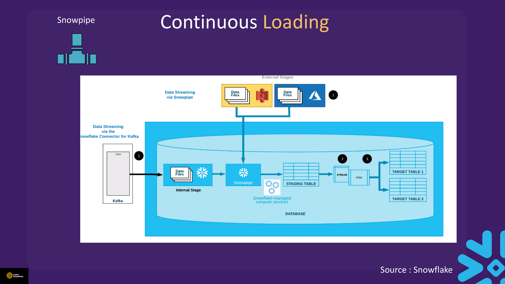
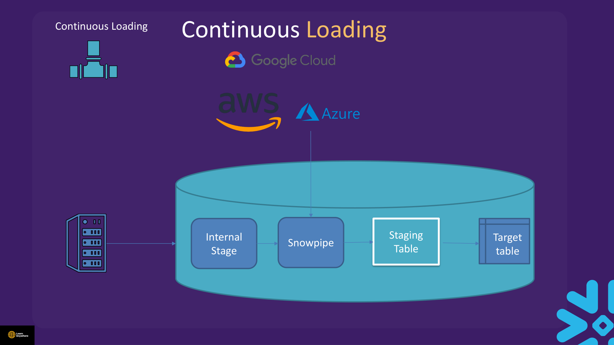
File-sizing considerations
Snowpipe parallelises work across files, so tuning file size directly affects throughput and reliability:
- The number of parallel load operations cannot exceed the number of data files — more files means more parallelism.
- Split very large files into smaller ones; combine tiny files into larger batches.
- Ideal compressed size is 100–250 MB or larger.
- Loading a single file of 100 GB or more is not recommended.
- On large files, choose
ON_ERRORcarefully — a bad row can affect a huge file. - If a load runs past 24 hours, Snowflake can cancel it with no data loaded.
- Aim to accumulate source files at roughly a one-minute cadence to match Snowpipe's micro-batch rhythm.
CREATE OR REPLACE TABLE new_pipe_table (
customer VARCHAR,
first_name VARCHAR,
last_name VARCHAR,
region VARCHAR,
email VARCHAR,
gender VARCHAR,
"ORDER" INTEGER
);
LIST @internal_named_stage;
CREATE OR REPLACE PIPE mypipe
AUTO_INGEST = FALSE -- TRUE when S3 event notifications configured
AS
COPY INTO new_pipe_table
FROM @internal_named_stage
FILE_FORMAT = (TYPE = CSV SKIP_HEADER = 1);
SHOW PIPES;
DESC PIPE mypipe;
SELECT SYSTEM$PIPE_STATUS('MYPIPE');
ALTER PIPE mypipe REFRESH;
SELECT COUNT(*) FROM new_pipe_table;AUTO_INGEST = FALSE, schedule ALTER PIPE … REFRESH via a task (see Tasks below).
- Expecting Snowpipe to use your warehouse — it uses serverless compute billed separately.
- Forgetting
ALTER PIPE … REFRESHwhenAUTO_INGEST = FALSE. - Not monitoring the pipe — use
SYSTEM$PIPE_STATUSand load history views.
Streams Concept & Demo
Course file: Advance Data Loading/Stream.txt
A stream is a Snowflake object that provides change data capture (CDC) — it tracks the delta of inserts and DML changes on a source table so downstream logic can act on only what changed. Critically, a stream does not copy table data; it stores an offset pointing into the source table's micro-partitions. When you query or consume the stream, Snowflake reconstructs the changed rows from the source.
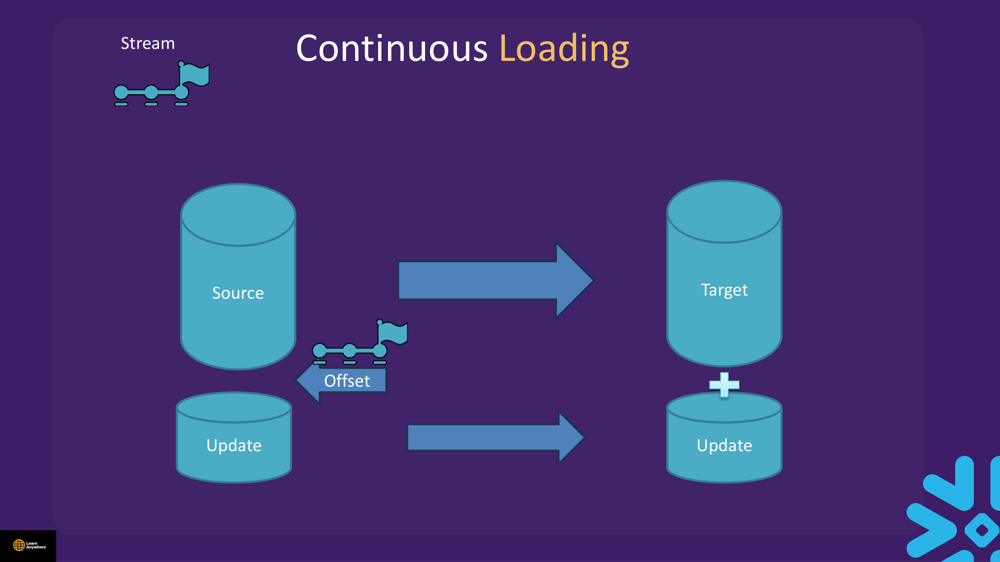
Worked example: insert, update, and delete
Suppose raw_data holds four rows. After the stream is created, three DML operations run: insert row 5 (Mike, 45), update row 1's age from 25 to 27, and delete row 4. The source table ends up with rows 1–3 and 5; the stream exposes four change rows.
Stream metadata columns
METADATA$ACTION—INSERTorDELETE(updates appear as DELETE + INSERT pair).METADATA$ISUPDATE—TRUEwhen the row is part of an update;FALSEfor pure insert/delete.METADATA$ROW_ID— unique row identifier for the change.
CREATE OR REPLACE TABLE raw_data (id INT, name VARCHAR(50), age INT);
CREATE OR REPLACE TABLE processed_data (id INT, name VARCHAR(50), age VARCHAR(10));
INSERT INTO raw_data VALUES
(1, 'John', 25), (2, 'Mary', 30), (3, 'Peter', 40), (4, 'Jane', 35);
-- One-time baseline load before CDC
INSERT INTO processed_data SELECT id, name, CAST(age AS VARCHAR) FROM raw_data;
CREATE OR REPLACE STREAM raw_data_stream ON TABLE raw_data;
SELECT * FROM raw_data_stream; -- empty until DML after stream creation
INSERT INTO raw_data VALUES (5, 'Mike', 45);
SELECT * FROM raw_data_stream;
INSERT INTO processed_data (id, name, age)
SELECT id, name, age FROM raw_data_stream;
SELECT * FROM raw_data_stream; -- empty — stream consumedMERGE pattern for CDC (handles updates & deletes)
UPDATE raw_data SET age = 27 WHERE id = 1;
DELETE FROM raw_data WHERE id = 4;
INSERT INTO raw_data VALUES (6, 'Mike', 65);
MERGE INTO processed_data p
USING raw_data_stream s ON p.id = s.id
WHEN MATCHED AND s.metadata$action = 'DELETE' AND s.metadata$isupdate = FALSE
THEN DELETE
WHEN MATCHED AND s.metadata$action = 'INSERT' AND s.metadata$isupdate = TRUE
THEN UPDATE SET p.name = s.name, p.age = s.age
WHEN NOT MATCHED AND s.metadata$action = 'INSERT' AND s.metadata$isupdate = FALSE
THEN INSERT (id, name, age) VALUES (s.id, s.name, s.age);Append-only and insert-only streams
CREATE OR REPLACE STREAM raw_data_stream2
ON TABLE raw_data
APPEND_ONLY = TRUE;
-- For external tables use INSERT_ONLY = TRUE instead| Stream type | Tracks | Typical use |
|---|---|---|
| Standard (default) | Inserts, updates, and deletes | Full CDC on native tables |
Append-only (APPEND_ONLY = TRUE) | Inserts only | Append-only sources where updates/deletes are irrelevant |
Insert-only (INSERT_ONLY = TRUE) | New rows from external files | External tables (only new files arrive) |
Streams can be created on standard tables, directory tables, external tables, and the underlying tables of a view.
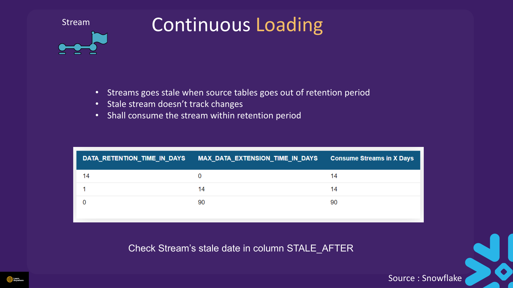
STALE_AFTER — once stale, the stream stops tracking changes.STALE_AFTER in SHOW STREAMS or DESC STREAM. A stream goes stale when the source table's data falls outside Time Travel retention — Snowflake can no longer reconstruct the delta, so the stream stops tracking changes. Consume streams within the retention period — see Section 3.
Task Concept & Demos
Course file: Advance Data Loading/TASKS.txt
Tasks schedule and orchestrate SQL work. A task can execute exactly one of the following:
- A single SQL statement
- A call to a stored procedure
- Procedural logic using Snowflake Scripting
New tasks are created in suspended state — run ALTER TASK … RESUME to activate.
| Category | Serverless task | User-managed task |
|---|---|---|
| Utilisation | When you cannot fully utilise a warehouse | When you can fully utilise the warehouse |
| Workload | Predictable load | May have spikes |
| Scheduling | When schedule timing is important | When schedule timing is less important |
| Syntax | USER_TASK_MANAGED_INITIAL_WAREHOUSE_SIZE = 'XSMALL' | WAREHOUSE = COMPUTE_WH |
| Limitations | Max warehouse size XXLARGE; cannot run Java/Python UDFs or Scala stored procedures inside the task body | Uses your warehouse's full size range |
CREATE OR REPLACE TABLE my_table (id INT, name VARCHAR(100), email VARCHAR(200));
CREATE OR REPLACE TASK task_demo_u
WAREHOUSE = COMPUTE_WH
SCHEDULE = '1 MINUTE'
AS
INSERT INTO my_table (id, name, email)
VALUES (100, 'User Managed', 'your-team@example.com');
CREATE OR REPLACE TASK task_demo_s
USER_TASK_MANAGED_INITIAL_WAREHOUSE_SIZE = 'XSMALL'
SCHEDULE = '1 MINUTE'
AS
INSERT INTO my_table (id, name, email)
VALUES (101, 'Serverless', 'your-team@example.com');
ALTER TASK task_demo_u RESUME;
ALTER TASK task_demo_s RESUME;
EXECUTE TASK task_demo_s;
SELECT * FROM TABLE(INFORMATION_SCHEMA.TASK_HISTORY())
ORDER BY scheduled_time DESC
LIMIT 20;
ALTER TASK task_demo_s SUSPEND;Dependent tasks (DAG)
A task DAG is a series of tasks composed of a single root task and additional tasks organised by their dependencies. Snowflake enforces these rules:
- One-directional — dependencies flow forward only
- A task can have multiple predecessors and multiple successors
- No looping allowed
- Maximum 1,000 tasks in a DAG
- Each task can have at most 100 predecessor tasks and 100 child tasks
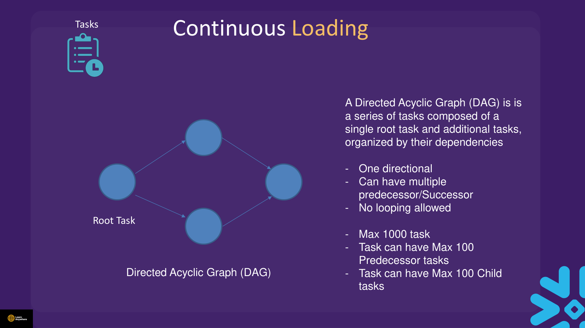
CREATE OR REPLACE TASK task_demo_2
USER_TASK_MANAGED_INITIAL_WAREHOUSE_SIZE = 'XSMALL'
AFTER task_demo_u
AS
INSERT INTO my_table (id, name, email)
VALUES (102, 'Dependent', 'your-team@example.com');
-- Resume root first, then child
ALTER TASK task_demo_u RESUME;
ALTER TASK task_demo_2 RESUME;Stream + task (CDC automation)
CREATE OR REPLACE TASK task_stream
USER_TASK_MANAGED_INITIAL_WAREHOUSE_SIZE = 'XSMALL'
SCHEDULE = '1 MINUTE'
WHEN SYSTEM$STREAM_HAS_DATA('raw_data_stream')
AS
INSERT INTO processed_data (id, name, age)
SELECT id, name, age FROM raw_data_stream;
ALTER TASK task_stream RESUME;CRON scheduling
Snowflake tasks accept cron-style schedules. The five fields are minute, hour, day of month, month, and day of week, followed by an optional timezone:
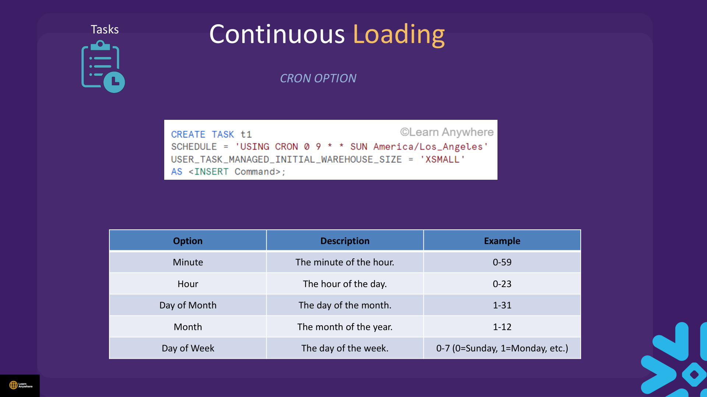
| Field | Range | Example meaning |
|---|---|---|
| Minute | 0–59 | At minute 0 of the hour |
| Hour | 0–23 | At hour 9 (9 AM) |
| Day of month | 1–31 | Every day (*) |
| Month | 1–12 | Every month (*) |
| Day of week | 0–7 (0 and 7 = Sunday) | Every day of the week (*) |
# ┌───────────── minute (0 - 59)
# │ ┌───────────── hour (0 - 23)
# │ │ ┌───────────── day of the month (1 - 31)
# │ │ │ ┌───────────── month (1 - 12)
# │ │ │ │ ┌───────────── day of the week (0 - 6) (Sunday to Saturday;
# │ │ │ │ │ 7 is also Sunday on some systems)
# │ │ │ │ │
# * * * * * America/Los_Angeles
-- Run every day at 9:00 AM Pacific
CREATE TASK daily_load
WAREHOUSE = COMPUTE_WH
SCHEDULE = 'USING CRON 0 9 * * * America/Los_Angeles'
AS
INSERT INTO audit_log VALUES (CURRENT_TIMESTAMP(), 'daily run');Cron scheduling automates repetitive work — data loading, transformations, pipe refreshes — with flexible start time, frequency, and interval control.
- Creating a task and wondering why it never runs — it starts suspended.
- Resuming child tasks before parent tasks in a DAG.
- Using a 1-minute schedule in production without considering credit cost — suspend when idle.
Demo : COPY INTO I & II
Course file: Advance Data Loading/COPY INTO OPTIONS.txt
COPY INTO <table> options control error handling, column mapping, and reload behaviour. Use MOCK1.csv (row 2 has a bad order value) to test ON_ERROR options — upload both MOCK.csv and MOCK1.csv per Section 4.
| Option | Values | Purpose |
|---|---|---|
ON_ERROR | ABORT_STATEMENT (bulk default), CONTINUE, SKIP_FILE (Snowpipe default), SKIP_FILE_n, 'SKIP_FILE_n%' | Error handling per file/row |
FORCE | TRUE | FALSE | Reload files even if already loaded |
PURGE | TRUE | FALSE (default FALSE) | Remove files from stage after load |
MATCH_BY_COLUMN_NAME | NONE (default), CASE_SENSITIVE, CASE_INSENSITIVE | Map CSV headers to table columns by name |
ENFORCE_LENGTH | TRUE (default), FALSE | Reject values longer than column definition |
TRUNCATECOLUMNS | TRUE | FALSE | Truncate strings that exceed VARCHAR length |
SIZE_LIMIT | bytes | Stop after loading N bytes of data |
RETURN_FAILED_ONLY | TRUE | FALSE | Result set shows only failed files |
CREATE OR REPLACE FILE FORMAT my_csv_ff
TYPE = CSV FIELD_DELIMITER = ','
SKIP_HEADER = 1 NULL_IF = ('NULL', 'null')
EMPTY_FIELD_AS_NULL = TRUE COMPRESSION = NONE;
CREATE OR REPLACE TABLE customers_named (
customer NUMBER(38,0) NOT NULL,
first_name VARCHAR(255) NOT NULL,
last_name VARCHAR(255) NOT NULL,
region VARCHAR(255) NOT NULL,
email VARCHAR(255) NOT NULL,
gender VARCHAR(255) NOT NULL,
"order" NUMBER(38,0) NOT NULL
);
-- Default: ABORT_STATEMENT
COPY INTO customers_named FROM @internal_named_stage FILE_FORMAT = my_csv_ff;
-- CONTINUE: load good rows, skip bad ones
COPY INTO customers_named FROM @internal_named_stage
FILE_FORMAT = my_csv_ff ON_ERROR = CONTINUE;
-- SKIP_FILE: skip entire file on first error
COPY INTO customers_named FROM @internal_named_stage
FILE_FORMAT = my_csv_ff ON_ERROR = SKIP_FILE;
-- Tolerate first 2 errors, or 2% of rows
COPY INTO customers_named FROM @internal_named_stage
FILE_FORMAT = my_csv_ff ON_ERROR = SKIP_FILE_2;
COPY INTO customers_named FROM @internal_named_stage
FILE_FORMAT = my_csv_ff ON_ERROR = 'SKIP_FILE_2%';-- SIZE_LIMIT stops after N bytes (first file always processes)
COPY INTO customers_named FROM @internal_named_stage
FILE_FORMAT = my_csv_ff SIZE_LIMIT = 640;
-- RETURN_FAILED_ONLY with CONTINUE
COPY INTO customers_named FROM @internal_named_stage
FILE_FORMAT = my_csv_ff ON_ERROR = CONTINUE RETURN_FAILED_ONLY = TRUE;
-- MATCH_BY_COLUMN_NAME with PARSE_HEADER
CREATE OR REPLACE FILE FORMAT my_csv_ff2
TYPE = CSV PARSE_HEADER = TRUE
NULL_IF = ('NULL', 'null') EMPTY_FIELD_AS_NULL = TRUE;
COPY INTO customers_named
FROM @internal_named_stage/MOCK.csv
FILE_FORMAT = my_csv_ff2
MATCH_BY_COLUMN_NAME = CASE_INSENSITIVE;
-- ENFORCE_LENGTH = FALSE allows overflow (opposite of TRUNCATECOLUMNS)
CREATE OR REPLACE TABLE customers_named2 (
customer NUMBER(38,0) NOT NULL,
first_name VARCHAR(5) NOT NULL,
last_name VARCHAR(255) NOT NULL,
region VARCHAR(255) NOT NULL,
email VARCHAR(255) NOT NULL,
gender VARCHAR(255) NOT NULL,
"order" NUMBER(38,0) NOT NULL
);
COPY INTO customers_named2
FROM @internal_named_stage/MOCK.csv
FILE_FORMAT = my_csv_ff
ENFORCE_LENGTH = FALSE;Demo : Validation Mode and Validate
Course file: Advance Data Loading/VALIDATION.txt
Use VALIDATION_MODE to dry-run a COPY INTO without inserting rows. After a real load, VALIDATE() inspects errors from a specific job.
COPY INTO customers_named3
FROM @internal_named_stage
FILE_FORMAT = my_csv_ff
VALIDATION_MODE = RETURN_ERRORS;
COPY INTO customers_named3
FROM @internal_named_stage
FILE_FORMAT = my_csv_ff
VALIDATION_MODE = RETURN_10_ROWS;
COPY INTO customers_named3
FROM @internal_named_stage
FILE_FORMAT = my_csv_ff
VALIDATION_MODE = RETURN_ALL_ERRORS;
-- After a real COPY, inspect last job errors
SELECT * FROM TABLE(VALIDATE(customers_named, JOB_ID => '_last'));
CREATE OR REPLACE TABLE copy_errors AS
SELECT * FROM TABLE(VALIDATE(customers_named, JOB_ID => '_last'));VALIDATION_MODE first on messy files → fix file format or source data → run production COPY INTO with ON_ERROR = ABORT_STATEMENT.
VALIDATION.txt hard-codes a query ID in VALIDATE(..., JOB_ID => '01ade083-…'). Always use '_last' or your own job ID from the COPY result set.
UDF and Stored Procedure Concept & Demo
Course file: Advance Data Loading/UDF SP.txt
User-defined functions extend Snowflake with operations not available through built-in system functions. Stored procedures are named, precompiled collections of SQL and control-flow logic invoked with CALL. Snowflake Scripting and Snowpark are covered in more depth in Section 13.
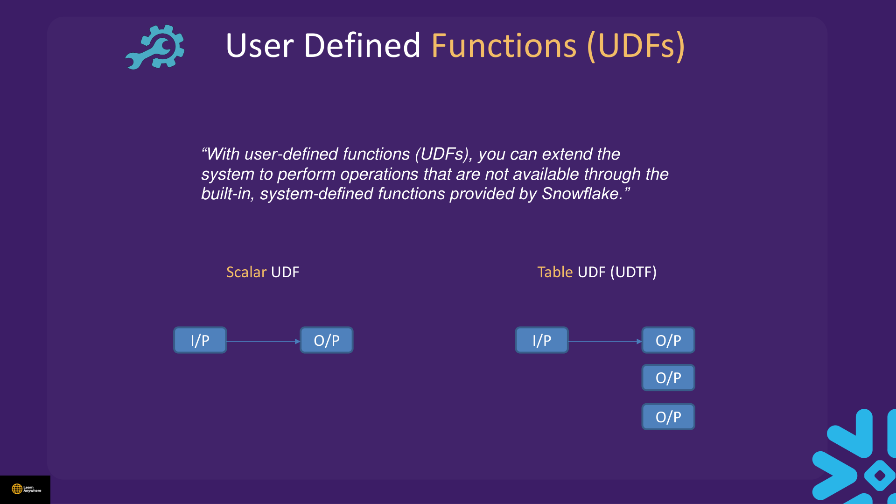
UDFs are database objects created in a specific database and schema, addressed as db.schema.function_name — for example demodb.demoschema.udf_sample(). You cannot create a UDF with the same name as a system-defined function.
Scalar UDFs — multiple languages
The same square function can be written in SQL, JavaScript, Python, or Java:
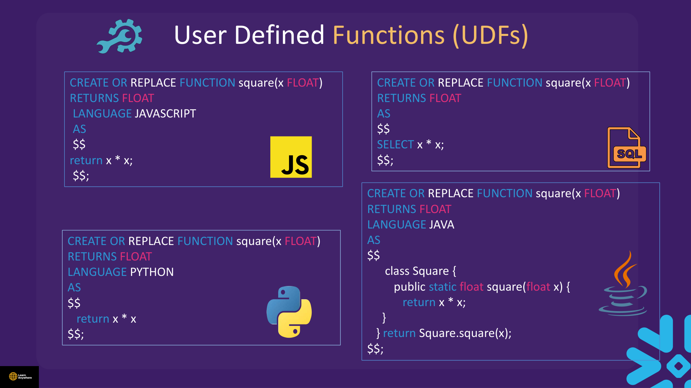
-- SQL
CREATE OR REPLACE FUNCTION square(x FLOAT)
RETURNS FLOAT
AS $$ SELECT x * x; $$;
-- JavaScript
CREATE OR REPLACE FUNCTION square(x FLOAT)
RETURNS FLOAT
LANGUAGE JAVASCRIPT
AS $$ return x * x; $$;
-- Python and Java variants follow the same RETURNS / LANGUAGE patternFunction overloading
Snowflake resolves UDFs by argument type, so you can define multiple versions of the same name:
CREATE OR REPLACE FUNCTION add_numbers(x NUMBER)
RETURNS NUMBER AS $$ SELECT x + 8; $$;
CREATE OR REPLACE FUNCTION add_numbers(x STRING)
RETURNS STRING AS $$ SELECT x || '8'; $$;
SELECT add_numbers(1); -- 9
SELECT add_numbers('1'); -- 18Scalar UDFs (SQL) — course demo
CREATE OR REPLACE FUNCTION addition(n NUMBER)
RETURNS NUMBER AS 'n + 8';
SELECT addition(1); -- 9
CREATE OR REPLACE FUNCTION addition_new(n NUMBER)
RETURNS NUMBER AS $$ n + 8 $$;
CREATE OR REPLACE FUNCTION addition(s STRING)
RETURNS STRING AS 's || ''8''';
SELECT addition('1'); -- 18JavaScript UDF
CREATE OR REPLACE FUNCTION addition_java(n FLOAT)
RETURNS FLOAT
LANGUAGE JAVASCRIPT
AS 'return n + 5.0;';
SELECT addition_java(1.1);UDF SP.txt uses return N + 5 while the parameter is n — JavaScript is case-sensitive. Use consistent casing.
Table functions (UDTF)
CREATE OR REPLACE FUNCTION get_orders_by_customer(customer_id INT)
RETURNS TABLE (order_id INT, order_date DATE, total_amount FLOAT)
AS $$
SELECT order_id, order_date, total_amount
FROM orders
WHERE customer_id = customer_id
$$;
SELECT * FROM TABLE(get_orders_by_customer(1234));
-- Course demo UDTF
CREATE OR REPLACE FUNCTION training_topics()
RETURNS TABLE(msg VARCHAR)
AS $$
SELECT 'Training' UNION ALL SELECT 'Snowflake'
$$;
SELECT msg FROM TABLE(training_topics()) ORDER BY msg;
CREATE OR REPLACE TABLE sales (product_id VARCHAR, quantity_sold NUMBER(11, 2));
INSERT INTO sales VALUES ('Jeans', 2000), ('Shirt', 1000);
CREATE OR REPLACE FUNCTION sales_for_product(prod_id VARCHAR)
RETURNS TABLE(product_id VARCHAR, quantity_sold NUMBER(11, 2))
AS $$
SELECT product_id, quantity_sold FROM sales WHERE product_id = prod_id
$$;
SELECT * FROM TABLE(sales_for_product('Jeans'));Stored procedures
A stored procedure is invoked only with CALL (including nested calls from other procedures). The general skeleton:
CREATE OR REPLACE PROCEDURE procedure_name (parameter_list)
RETURNS return_type [NOT NULL]
LANGUAGE {SQL | JAVASCRIPT | PYTHON | JAVA}
EXECUTE AS CALLER | OWNER
AS
$$
BEGIN
-- logic
RETURN message;
END;
$$;
CALL procedure_name(parameter_values);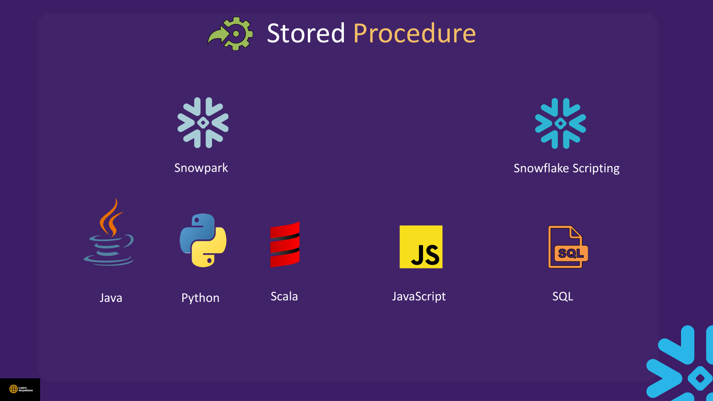
CREATE OR REPLACE SECURE PROCEDURE return_greater(a INTEGER, b INTEGER)
RETURNS INTEGER
LANGUAGE SQL
EXECUTE AS CALLER
AS
BEGIN
IF (a > b) THEN RETURN a; ELSE RETURN b; END IF;
END;
CALL return_greater(4, 3); -- 4
-- Procedure returning a result set (course slide pattern)
CREATE OR REPLACE PROCEDURE get_customer_orders(customer_id INT)
RETURNS TABLE (order_id INT, order_date DATE, total_amount FLOAT)
LANGUAGE SQL
EXECUTE AS OWNER
AS
$$
BEGIN
SELECT order_id, order_date, total_amount
FROM orders
WHERE customer_id = customer_id;
END;
$$;
CALL get_customer_orders(1234);
SHOW FUNCTIONS LIKE '%add%';
SHOW PROCEDURES LIKE '%return%';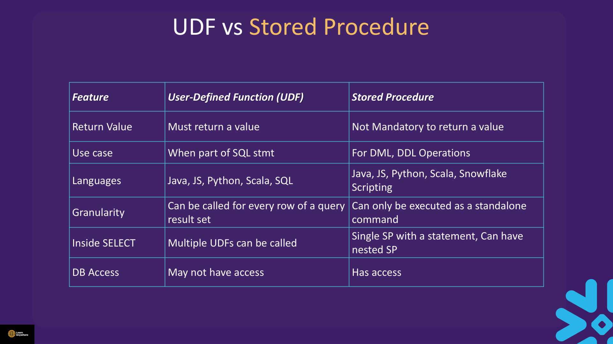
| Feature | User-defined function (UDF) | Stored procedure |
|---|---|---|
| Return value | Must return a value | Return is optional |
| Typical use | Part of a SQL statement (SELECT, WHERE, COPY transform) | DML, DDL, orchestration |
| Languages | Java, JavaScript, Python, SQL | Java, JavaScript, Python, Scala, Snowflake Scripting, SQL |
| Granularity | Called for every row of a query result set | Executed as a standalone command only |
| Inside SELECT | Multiple UDFs can appear in one SELECT | Single procedure per statement; nesting via CALL is allowed |
| Database access | May not have full database access | Has database access |
| Invocation | In queries | CALL only |
CREATE SECURE FUNCTION hides the function body from users who can still execute it — important when logic embeds sensitive filters.
Cloning Concept & Demos
Course file: Advance Data Loading/CLONE.txt
Cloning creates an exact copy of a database, schema, or table for backups, testing new structures, or spinning up dev environments. A clone is zero-copy: it shares underlying micro-partitions with the source until either side changes through DML — initial creation is fast and does not duplicate storage immediately. Point-in-time cloning uses the same AT/BEFORE syntax as Time Travel — see Section 3.
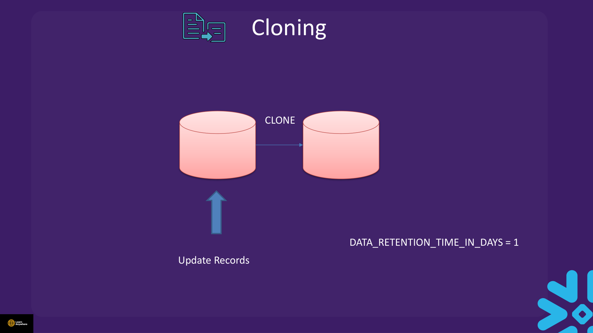
CREATE OR REPLACE TABLE sample_data (id INT, name VARCHAR(50), age INT);
INSERT INTO sample_data VALUES
(1, 'John', 25), (2, 'Mary', 30), (3, 'Peter', 40), (4, 'Jane', 35);
CREATE OR REPLACE TABLE clone_data CLONE sample_data;
CREATE OR REPLACE TABLE clone_data2 CLONE clone_data;
INSERT INTO sample_data VALUES (5, 'John', 25);
SELECT * FROM clone_data; -- still 4 rows — clone is independent snapshotALTER SESSION SET TIMEZONE = 'UTC';
SELECT SYSTIMESTAMP();
TRUNCATE TABLE sample_data;
CREATE OR REPLACE TABLE orders_clone_restore CLONE sample_data
BEFORE(TIMESTAMP => '<your_timestamp>'::TIMESTAMP_NTZ);
CREATE OR REPLACE TABLE orders_clone_restore CLONE sample_data
BEFORE(STATEMENT => '<your_query_id>');
CREATE OR REPLACE TABLE orders_clone_restore CLONE sample_data
AT(OFFSET => -60 * 3); -- 3 hours ago-- Clone schema (includes child objects)
CREATE OR REPLACE SCHEMA la_schema2 CLONE la_schema;
-- Clone stream
CREATE OR REPLACE STREAM raw_data_stream2 CLONE raw_data_stream;
DESC STREAM raw_data_stream2;What a clone includes and excludes
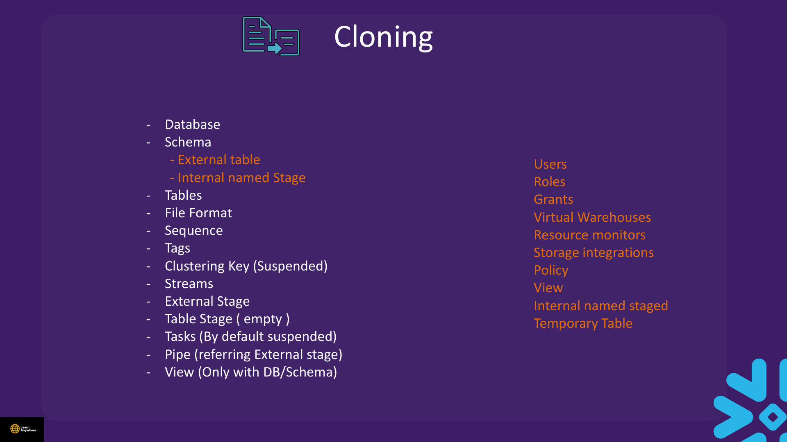
Cloned with database or schema
- Database, schema (including external tables and internal named stages)
- Tables, file formats, sequences, tags
- Clustering keys (suspended)
- Streams, external stages, table stages (empty)
- Tasks (suspended by default)
- Pipes referring to an external stage
- Views — only when cloning a database or schema
Not cloned
- Users, roles, grants
- Virtual warehouses, resource monitors
- Storage integrations, policies
- Views when cloning a table alone
- Internal named stages when cloning a table alone
- Temporary tables
Privileges required to clone
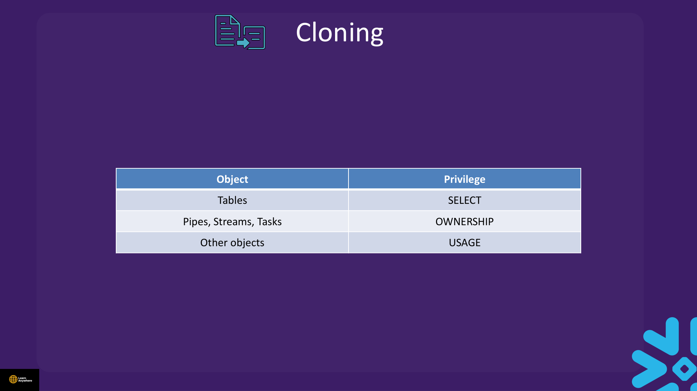
| Object | Privilege required on source |
|---|---|
| Tables | SELECT |
| Pipes, streams, tasks | OWNERSHIP |
| Other objects | USAGE |
Cloning with Time Travel
Point-in-time clone is available only for database, schema, table, and stream. If you omit a timestamp, Snowflake defaults to the current timestamp. Cloning fails when:
- The source object did not exist at the requested point in the past
- A pipe with
AUTO_INGEST = TRUEwould need to be recreated (historical pipe state cannot be restored the same way)
Fail-safe (brief)
After Time Travel expires, Snowflake keeps permanent table data in Fail-safe for a fixed 7 days. During Fail-safe users cannot query or clone the data — only Snowflake Support can attempt recovery. Storage continues to bill. Do not rely on Fail-safe as your DR plan.
Practical Lab — Pipeline Mini-Stack
USE SCHEMA la_db.la_schema;
CREATE OR REPLACE PIPE pipe_lab AUTO_INGEST = FALSE AS
COPY INTO new_pipe_table FROM @internal_named_stage
FILE_FORMAT = (TYPE = CSV SKIP_HEADER = 1);
ALTER PIPE pipe_lab REFRESH;
CREATE OR REPLACE TABLE raw_data (id INT, name VARCHAR(50), age INT);
CREATE OR REPLACE TABLE processed_data (id INT, name VARCHAR(50), age VARCHAR(10));
INSERT INTO raw_data VALUES (1,'Alice',30), (2,'Bob',25);
CREATE OR REPLACE STREAM raw_stream ON TABLE raw_data;
INSERT INTO raw_data VALUES (3,'Carol',35);
CREATE OR REPLACE TASK process_stream_task
WAREHOUSE = COMPUTE_WH
SCHEDULE = '2 MINUTE'
WHEN SYSTEM$STREAM_HAS_DATA('raw_stream')
AS
INSERT INTO processed_data SELECT id, name, CAST(age AS VARCHAR) FROM raw_stream;
ALTER TASK process_stream_task RESUME;
EXECUTE TASK process_stream_task;Cleanup
ALTER TASK IF EXISTS process_stream_task SUSPEND;
DROP TASK IF EXISTS process_stream_task;
DROP PIPE IF EXISTS pipe_lab;
DROP STREAM IF EXISTS raw_stream;Interview questions
Try to answer each one before opening it.
When would you choose Snowpipe over a scheduled bulk COPY INTO?Scenario
Use Snowpipe when files arrive continuously and you want near-real-time loads without keeping a warehouse running. Snowpipe uses serverless compute triggered by file arrival (or ALTER PIPE … REFRESH); bulk COPY runs on your virtual warehouse on demand or on a task schedule. Bulk COPY suits large batch windows where you control exactly when warehouse credits are spent; Snowpipe suits event-driven pipelines where latency matters more than minimising per-load overhead.
Why does Snowpipe default to ON_ERROR = SKIP_FILE while bulk COPY defaults to ABORT_STATEMENT?Comparison
Bulk loads are usually operator-initiated: aborting the whole statement on the first bad row lets you fix the file and rerun cleanly. Snowpipe ingests autonomously in micro-batches — skipping a corrupt file keeps the pipe running instead of halting the entire continuous pipeline. You can override either default, but the out-of-box behaviour reflects batch control versus always-on ingestion.
How is Snowpipe billed, and why is it not free even when your warehouse is suspended?Cost
Snowpipe charges for serverless compute used to scan staged files and load rows, billed separately from warehouse credits. File ingestion events and cloud notification plumbing may also incur cost depending on setup. Because Snowpipe never uses your warehouse, a suspended warehouse does not stop pipe charges — only suspending or dropping the pipe, or stopping file arrivals, does.
What does Snowflake load metadata do, what is the 64-day window, and when is FORCE = TRUE justified?Gotcha
After a successful load, Snowflake records which files were loaded so a repeat COPY INTO skips them automatically — metadata is retained for 64 days. That is why a second COPY with the same files returns zero rows loaded. Use FORCE = TRUE when you deliberately need to reload unchanged files, for example after truncating the target table, fixing a transform, or reprocessing corrected source files within the metadata window.
What is the difference between VALIDATION_MODE on COPY INTO and the VALIDATE() table function?Comparison
VALIDATION_MODE dry-runs a COPY before you insert anything — options like RETURN_ERRORS or RETURN_10_ROWS show what would fail without writing rows. VALIDATE() inspects errors from a load that already ran, using a job ID from the COPY result (or '_last'). Workflow: validate first on messy files, then run production COPY with strict ON_ERROR, then use VALIDATE() if you need to diagnose a completed job.
How do MATCH_BY_COLUMN_NAME and PARSE_HEADER work together?SQL
PARSE_HEADER = TRUE on the file format tells Snowflake to read the first row as column names instead of data. MATCH_BY_COLUMN_NAME then maps those header names to target table columns — CASE_INSENSITIVE ignores case differences. Without PARSE_HEADER, matching by name has nothing to match; without MATCH_BY_COLUMN_NAME, you rely on positional $1, $2, … mapping.
What does a stream actually store — and what are the three stream types?Fundamentals
A stream does not copy table data; it stores change metadata and offsets pointing into the source table's micro-partitions, plus columns like METADATA$ACTION, METADATA$ISUPDATE, and METADATA$ROW_ID. The three types are: standard (default — tracks inserts, updates, and deletes), append-only (APPEND_ONLY = TRUE — inserts only), and insert-only (INSERT_ONLY = TRUE — for external tables where only new files arrive).
How does a stream go stale, and how do you avoid it?Gotcha
A stream becomes stale when source changes fall outside Time Travel retention — Snowflake can no longer reconstruct the delta. Check STALE_AFTER in SHOW STREAMS or DESC STREAM. Avoid staleness by consuming streams within the retention window, increasing retention if your SLA requires longer gaps between runs, and not letting unconsumed changes pile up indefinitely.
Walk through the MERGE pattern for stream-based CDC that handles inserts, updates, and deletes.SQL
Updates appear as a DELETE + INSERT pair in the stream. A typical MERGE uses three clauses: delete when METADATA$ACTION = 'DELETE' and METADATA$ISUPDATE = FALSE; update when action is INSERT and METADATA$ISUPDATE = TRUE; insert when action is INSERT and METADATA$ISUPDATE = FALSE. Consuming the stream in the MERGE advances the offset so processed changes disappear on the next read.
What is the difference between user-managed and serverless tasks, and how do you build a DAG?Comparison
User-managed tasks specify WAREHOUSE = … and bill that warehouse's credits. Serverless tasks use USER_TASK_MANAGED_INITIAL_WAREHOUSE_SIZE and Snowflake spins up task compute automatically. Build a DAG with AFTER parent_task on child tasks, then resume the root task first followed by children. All new tasks start suspended until you ALTER TASK … RESUME.
What does SYSTEM$STREAM_HAS_DATA return, and why gate a task on it?Scenario
It returns TRUE when the named stream has unconsumed change rows. Gating a scheduled task with WHEN SYSTEM$STREAM_HAS_DATA('stream_name') prevents the task from running — and spending credits — on an empty stream every minute. The task only fires when there is CDC work to do, which is the standard pattern for stream-driven pipelines.
When would you use a UDF versus a stored procedure, and which can appear in a SELECT?Comparison
Scalar UDFs extend expressions inside SELECT, WHERE, and load-time COPY transforms — they must return a value. Stored procedures orchestrate multi-step DDL/DML and are invoked only with CALL, not embedded in SELECT. UDTFs return row sets via TABLE(fn()). Choose UDFs for reusable calculations; choose procedures for workflows with branching logic.
What is the difference between EXECUTE AS CALLER and EXECUTE AS OWNER on a stored procedure?Fundamentals
EXECUTE AS CALLER (the default in many cases) runs the procedure with the caller's privileges and current role context. EXECUTE AS OWNER runs with the procedure owner's rights, so callers can perform operations they could not run directly if the owner has broader grants. Use OWNER when you want a controlled privilege elevation; use CALLER when the caller's access should bound what the procedure can touch.
How is zero-copy cloning billed, and what does a clone inherit versus not inherit?Cost
Clone creation is fast because it shares underlying micro-partitions with the source — you pay no extra storage until one side diverges through DML. Schema and database clones bring tables, streams, tasks (suspended), pipes on external stages, file formats, sequences, and views. They do not copy users, roles, grants, virtual warehouses, resource monitors, storage integrations, or policies. You need SELECT on source tables, OWNERSHIP on pipes/streams/tasks, and USAGE on other objects to clone them.
What are Snowpipe's file-sizing rules, and why does a 100 GB single file hurt you?Scenario
Parallel Snowpipe loads cannot exceed the number of files, so many medium files beat one monster file. Target 100–250 MB compressed (or larger batches built from small files). A single 100 GB+ file is not recommended — it limits parallelism, makes ON_ERROR painful, and can run past the 24-hour cancel threshold with nothing loaded. Accumulate source files at roughly a one-minute cadence to align with micro-batch ingestion.
What are the limits on a task DAG, and when is serverless the wrong choice?Comparison
A DAG has one root task, no loops, max 1,000 tasks, and each task can have at most 100 predecessors and 100 child tasks. Serverless tasks cap at warehouse size XXLARGE and cannot run Java/Python UDFs or Scala stored procedures in the task body — use a user-managed warehouse when you need those or when the warehouse stays fully utilised anyway.
How does Snowpipe authentication differ from bulk COPY, and how long is load metadata kept?Fundamentals
Bulk COPY authenticates like any client session (password, SSO, key-pair). Snowpipe automation requires key-pair authentication with a JSON Web Token. Load metadata retention differs too: bulk COPY keeps file history on the target table for 64 days; Snowpipe retains it for 14 days. Both skip already-loaded files within their respective windows unless you force a reload.
Hands-on practice
Run these in a trial account on an X-Small warehouse with AUTO_SUSPEND = 60. Clean up when you finish.
-
Using
@internal_named_stage/MOCK.csvfrom Section 4, createpractice_load_tablewith columnscustomer,full_name,region, andemail. Load with a COPY transform that concatenates first and last name. UseFORCE = TRUEif the file was loaded before.After COPY succeeds,
SELECT COUNT(*) FROM practice_load_tablereturns approximately 1000 rows, andfull_namevalues contain a space between first and last names.Show solutionSQL
USE ROLE SYSADMIN; USE WAREHOUSE COMPUTE_WH; USE DATABASE la_db; USE SCHEMA la_schema; CREATE OR REPLACE TABLE practice_load_table ( customer VARCHAR, full_name VARCHAR, region VARCHAR, email VARCHAR ); COPY INTO practice_load_table (customer, full_name, region, email) FROM ( SELECT t.$1, CONCAT(t.$2, ' ', t.$3), t.$4, t.$5 FROM @internal_named_stage/MOCK.csv t ) FILE_FORMAT = (TYPE = CSV SKIP_HEADER = 1) FORCE = TRUE; -
Create pipe
practice_pipewithAUTO_INGEST = FALSEloading MOCK.csv intonew_pipe_table, then runALTER PIPE practice_pipe REFRESH. This uses serverless Snowpipe compute and will incur pipe charges.SELECT SYSTEM$PIPE_STATUS('PRACTICE_PIPE')shows a runnable state, andSELECT COUNT(*) FROM new_pipe_tablereturns rows after refresh (zero if load metadata already recorded the file unless you useFORCEin the pipe definition or truncate first).Show solutionSQL
CREATE OR REPLACE TABLE new_pipe_table ( customer VARCHAR, first_name VARCHAR, last_name VARCHAR, region VARCHAR, email VARCHAR, gender VARCHAR, "ORDER" INTEGER ); CREATE OR REPLACE PIPE practice_pipe AUTO_INGEST = FALSE AS COPY INTO new_pipe_table FROM @internal_named_stage FILE_FORMAT = (TYPE = CSV SKIP_HEADER = 1); ALTER PIPE practice_pipe REFRESH; SELECT SYSTEM$PIPE_STATUS('PRACTICE_PIPE'); -
Set up CDC on
raw_dataandprocessed_data: create streampractice_stream, insert row(7, 'Eve', 28), then MERGE intoprocessed_datahandling insert, update, and delete via stream metadata columns.After MERGE,
processed_datacontains id 7 with age'28'. Updating raw_data id 7 to age 29 and re-running MERGE changes processed_data accordingly. Queryingpractice_streamafter a consuming MERGE returns no rows.Show solutionSQL
CREATE OR REPLACE TABLE raw_data (id INT, name VARCHAR(50), age INT); CREATE OR REPLACE TABLE processed_data (id INT, name VARCHAR(50), age VARCHAR(10)); INSERT INTO raw_data VALUES (1,'John',25), (2,'Mary',30); CREATE OR REPLACE STREAM practice_stream ON TABLE raw_data; INSERT INTO raw_data VALUES (7, 'Eve', 28); MERGE INTO processed_data p USING practice_stream s ON p.id = s.id WHEN MATCHED AND s.metadata$action = 'DELETE' AND s.metadata$isupdate = FALSE THEN DELETE WHEN MATCHED AND s.metadata$action = 'INSERT' AND s.metadata$isupdate = TRUE THEN UPDATE SET p.name = s.name, p.age = CAST(s.age AS VARCHAR) WHEN NOT MATCHED AND s.metadata$action = 'INSERT' AND s.metadata$isupdate = FALSE THEN INSERT (id, name, age) VALUES (s.id, s.name, CAST(s.age AS VARCHAR)); -
Create task
practice_stream_taskthat runs every 2 minutes, gates onSYSTEM$STREAM_HAS_DATA('practice_stream'), and inserts unconsumed stream rows intoprocessed_data. Resume the task and execute it once manually. Tasks consume credits while running.After inserting a new row into
raw_dataand callingEXECUTE TASK practice_stream_task, the row appears inprocessed_dataand the stream is consumed.Show solutionSQL
CREATE OR REPLACE TASK practice_stream_task WAREHOUSE = COMPUTE_WH SCHEDULE = '2 MINUTE' WHEN SYSTEM$STREAM_HAS_DATA('practice_stream') AS INSERT INTO processed_data (id, name, age) SELECT id, name, CAST(age AS VARCHAR) FROM practice_stream; ALTER TASK practice_stream_task RESUME; INSERT INTO raw_data VALUES (8, 'Frank', 50); EXECUTE TASK practice_stream_task; -
Dry-run loading MOCK1.csv (contains a bad order value on row 2) into
customers_namedusingVALIDATION_MODE = RETURN_ERRORSwithout inserting rows.The COPY result set lists validation errors for the bad row — no rows are inserted into
customers_named.Show solutionSQL
CREATE OR REPLACE FILE FORMAT my_csv_ff TYPE = CSV FIELD_DELIMITER = ',' SKIP_HEADER = 1 NULL_IF = ('NULL', 'null') EMPTY_FIELD_AS_NULL = TRUE; CREATE OR REPLACE TABLE customers_named ( customer NUMBER(38,0), first_name VARCHAR(255), last_name VARCHAR(255), region VARCHAR(255), email VARCHAR(255), gender VARCHAR(255), "order" NUMBER(38,0) ); COPY INTO customers_named FROM @internal_named_stage/MOCK1.csv FILE_FORMAT = my_csv_ff VALIDATION_MODE = RETURN_ERRORS; -
Create a serverless task
practice_cron_taskscheduled with cron to run at 9:00 AM in your timezone (USING CRON 0 9 * * * <timezone>) that inserts one audit row. Resume and execute it once manually.SELECT * FROM TABLE(INFORMATION_SCHEMA.TASK_HISTORY())shows a completed run forPRACTICE_CRON_TASKafterEXECUTE TASK.Show solutionSQL
CREATE OR REPLACE TABLE task_audit (run_at TIMESTAMP_NTZ, note VARCHAR); CREATE OR REPLACE TASK practice_cron_task USER_TASK_MANAGED_INITIAL_WAREHOUSE_SIZE = 'XSMALL' SCHEDULE = 'USING CRON 0 9 * * * America/Los_Angeles' AS INSERT INTO task_audit VALUES (CURRENT_TIMESTAMP(), 'cron practice'); ALTER TASK practice_cron_task RESUME; EXECUTE TASK practice_cron_task; -
Clone
sample_datatosample_data_clone, insert a row into the source only, and confirm the clone still shows the pre-insert row count — demonstrating shared micro-partitions until divergence.SELECT COUNT(*) FROM sample_data_clonestays at 4 whilesample_datashows 5 after the insert.Show solutionSQL
CREATE OR REPLACE TABLE sample_data (id INT, name VARCHAR(50), age INT); INSERT INTO sample_data VALUES (1,'John',25), (2,'Mary',30), (3,'Peter',40), (4,'Jane',35); CREATE OR REPLACE TABLE sample_data_clone CLONE sample_data; SELECT COUNT(*) FROM sample_data_clone; -- 4 INSERT INTO sample_data VALUES (5, 'Mike', 45); SELECT COUNT(*) FROM sample_data; -- 5 SELECT COUNT(*) FROM sample_data_clone; -- still 4 -
Clean up all practice objects created in this section: suspend and drop tasks, then drop pipes, streams, and practice tables.
All listed objects are removed;
SHOW TASKS LIKE 'practice%'andSHOW PIPES LIKE 'practice%'return no rows.Show solutionSQL
ALTER TASK IF EXISTS practice_stream_task SUSPEND; ALTER TASK IF EXISTS practice_cron_task SUSPEND; DROP TASK IF EXISTS practice_stream_task; DROP TASK IF EXISTS practice_cron_task; DROP PIPE IF EXISTS practice_pipe; DROP STREAM IF EXISTS practice_stream; DROP TABLE IF EXISTS practice_load_table; DROP TABLE IF EXISTS new_pipe_table; DROP TABLE IF EXISTS raw_data; DROP TABLE IF EXISTS processed_data; DROP TABLE IF EXISTS customers_named; DROP TABLE IF EXISTS sample_data; DROP TABLE IF EXISTS sample_data_clone; DROP TABLE IF EXISTS task_audit;
Recap
- Bulk COPY: user warehouse, 64-day load metadata, client auth; Snowpipe: serverless, 14-day metadata, key-pair JWT.
- Supported load formats: CSV, TSV, JSON, Parquet, Avro, ORC, XML.
- Bulk transforms: reorder, omit, cast, truncate; duplicate-file detection via load metadata.
- Snowpipe micro-batches (~1 min); ideal files 100–250 MB compressed; avoid 100 GB+ single files.
- File formats define parsing; attach to stages, override in COPY, or infer with
INFER_SCHEMA. - Streams = CDC offset (not a data copy); standard / append-only / insert-only; check
STALE_AFTER. - Updates in streams = DELETE + INSERT pair with shared
METADATA$ROW_ID,ISUPDATE = TRUE. - Tasks: single SQL, procedure call, or Scripting; start suspended; DAG max 1000 tasks, 100 preds/children.
- Serverless tasks cap at XXLARGE; no Java/Python UDF or Scala SP in task body.
- Bulk COPY options:
ON_ERROR,FORCE,MATCH_BY_COLUMN_NAME,VALIDATION_MODE. - UDFs per-row in SELECT (must return value); procedures via
CALL(return optional); UDTFs viaTABLE(fn()). - Clone shares micro-partitions until DML; grants/users/warehouses not cloned; SELECT/OWNERSHIP/USAGE privileges required.
- Point-in-time clone: database, schema, table, stream only; fails if source missing or AUTO_INGEST pipe must be recreated.